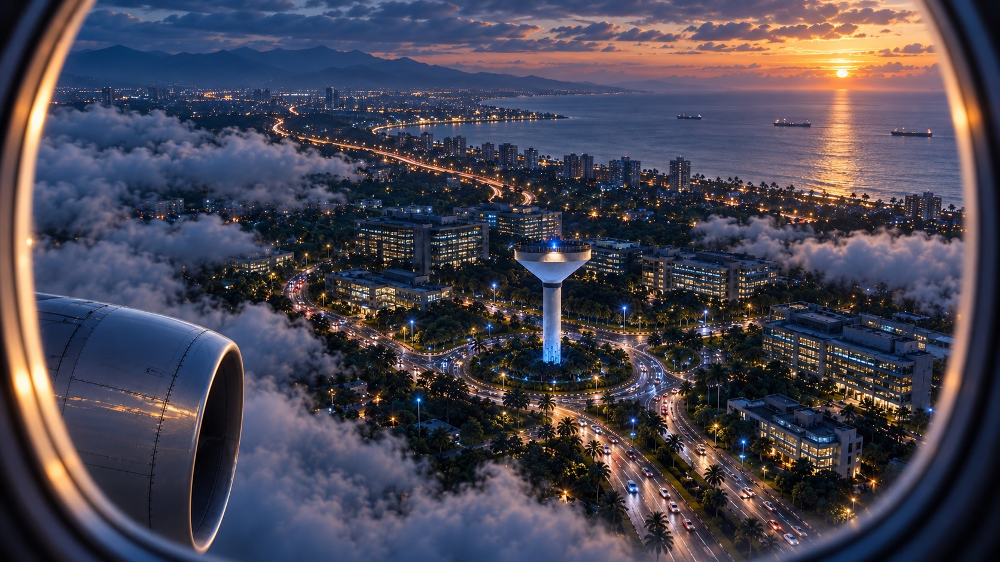
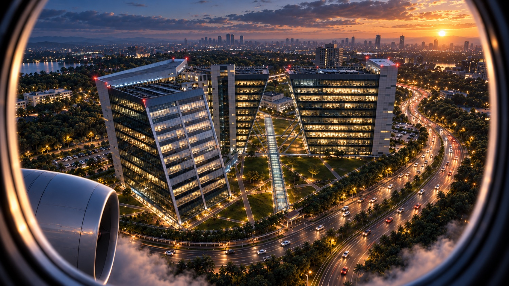

L1 · WATER TOWER / TECHNOPARK · 8.5570° N · 76.8811° E
THE ANCHOR
NODE.
The Technopark water tower — the fixed bearing every corridor route is measured from.

L2 · GANGA / TECHNOPARK PHASE III · GANGA & YAMUNA
WHERE THE
SHIFT BEGINS.
Ganga and Yamuna — the twin towers where employee journeys start and end, shift after shift.
L3 · TRV AIRPORT / TRIVANDRUM INTERNATIONAL · TRV
CLEARED
FOR FINAL.
The airport link — terminal pickups timed to the arrivals board, not the other way round.
L4 · VIZHINJAM / VIZHINJAM INTERNATIONAL SEAPORT
WHERE THE
ROUTE MEETS
THE SEA.
The southern corridor ends at the deepwater port — crew change and terminal transport on the same trip ledger.
00° 12' 42.6" N · NIGHT ROUTE
THE WAYIN
Follow the signal beneath the storm. A city-scale gateway waits where every direction converges.
PHASE 01 / ATMOSPHERE
BREAK
THE CLOUDLINE.
The route is not drawn on a map. It is revealed one layer at a time.
PHASE 02 / ORIENTATION
EVERY
ROAD LEADS
HERE.
PHASE 03 / THE NEXUS
THE CITY
TURNS AROUND
YOU.
A single point of arrival. A thousand trajectories beyond it.